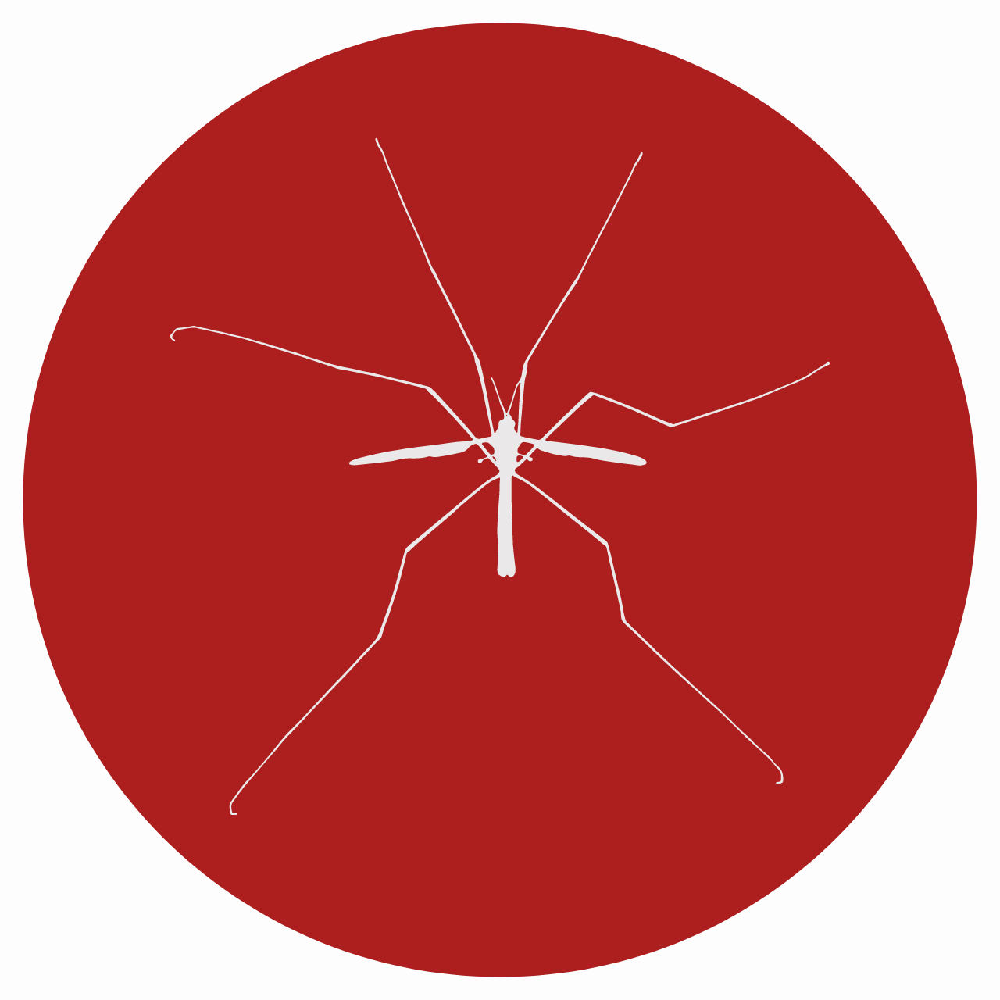
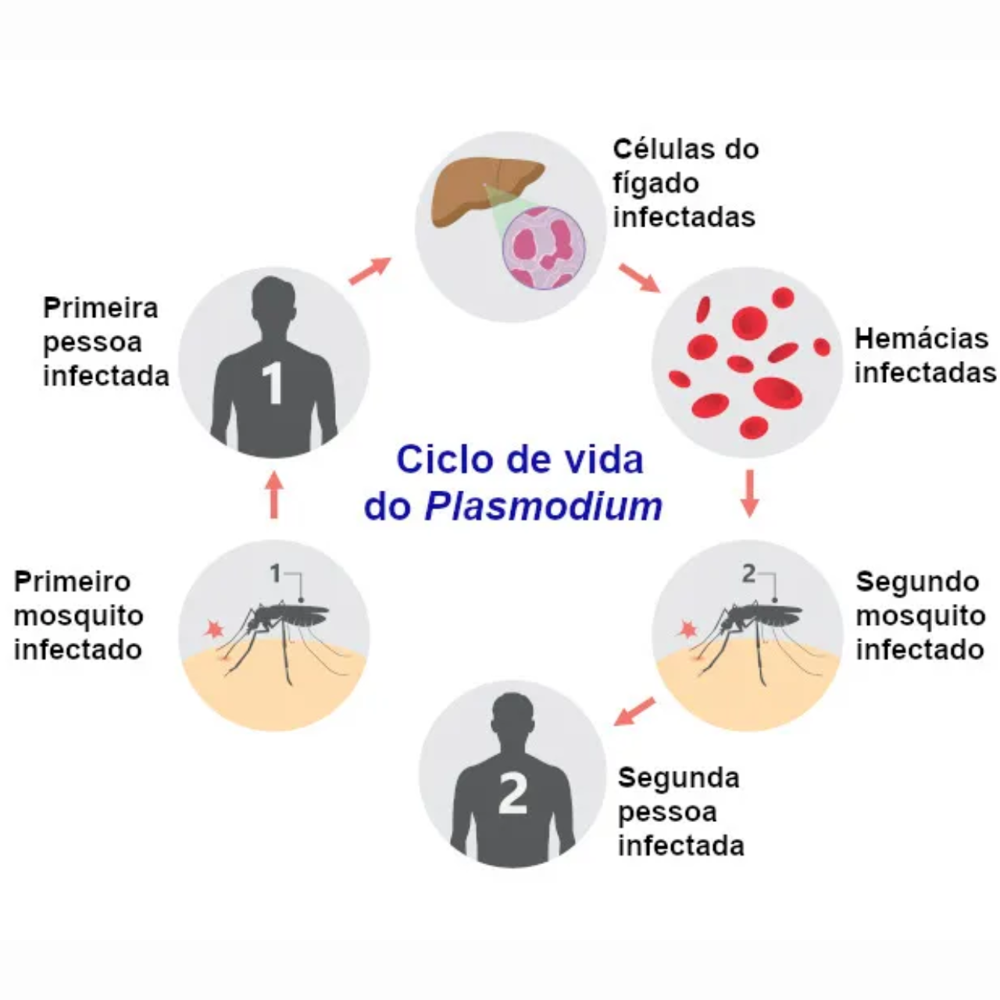
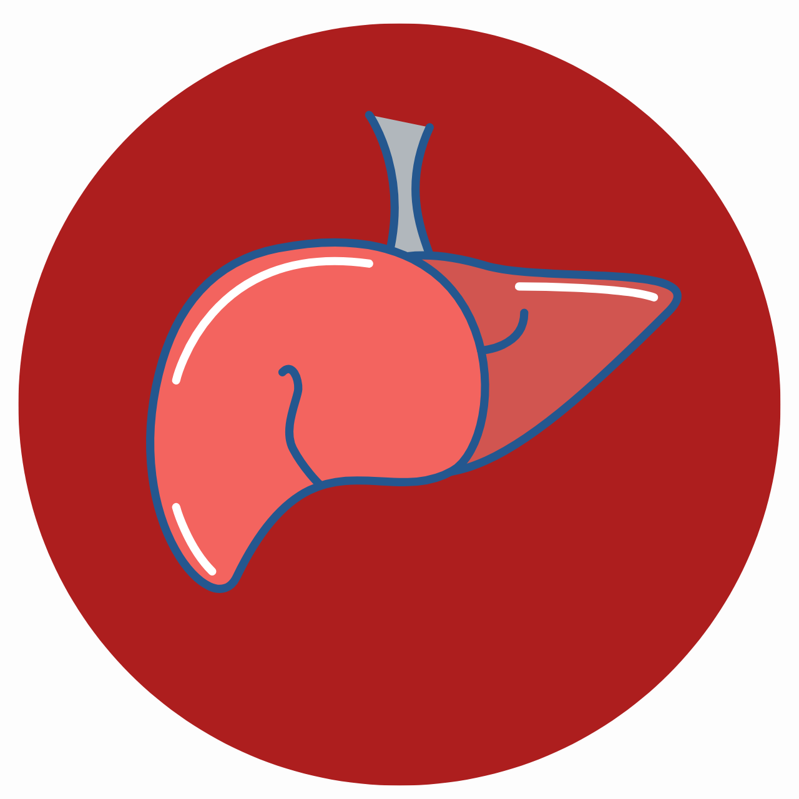
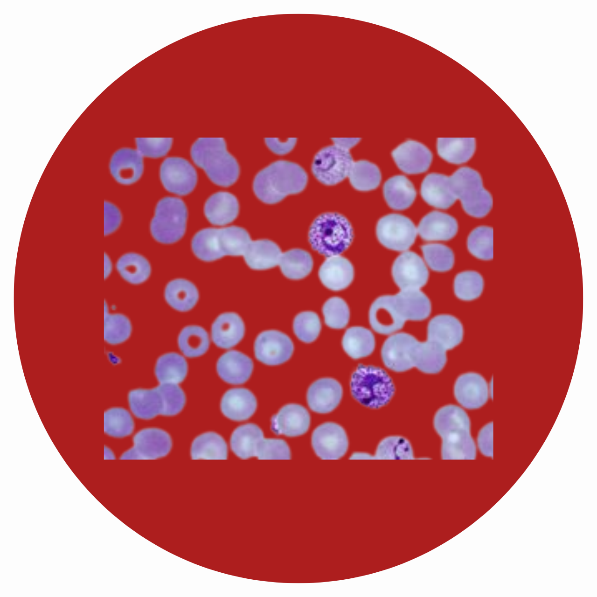
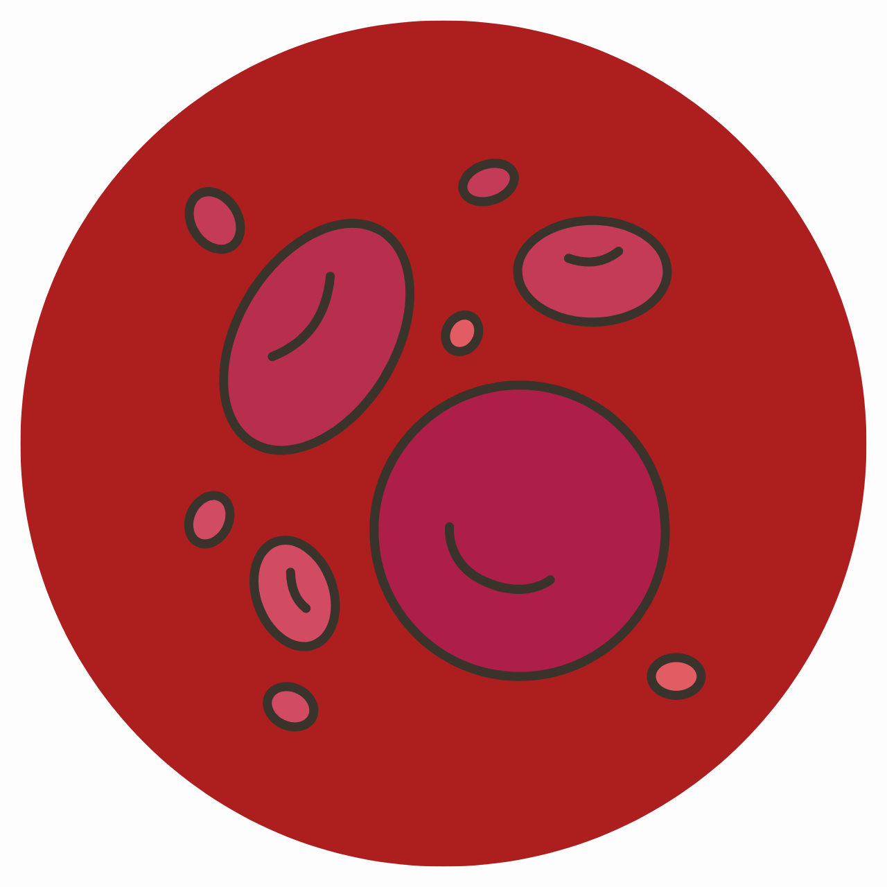
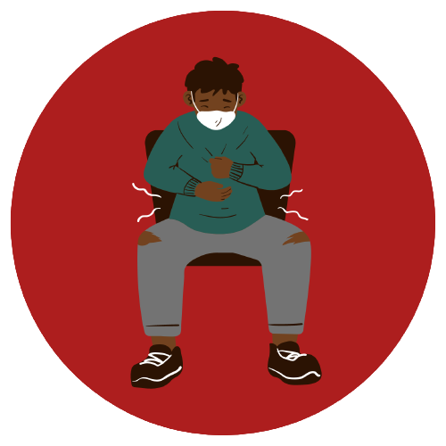
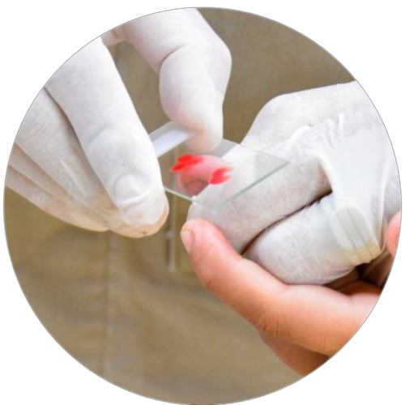
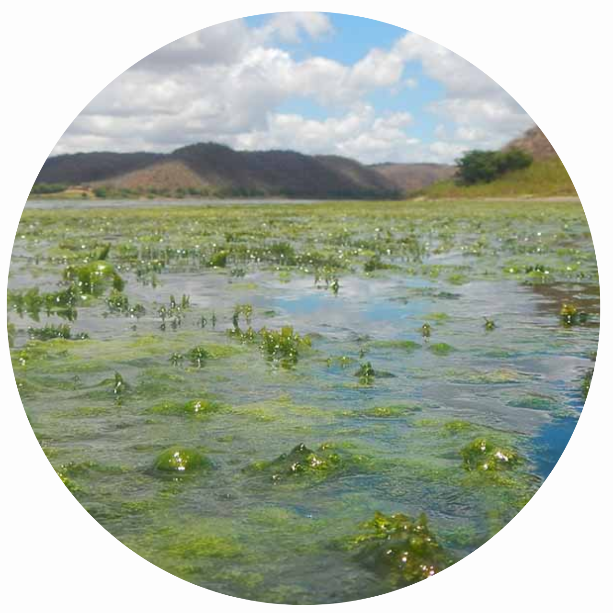
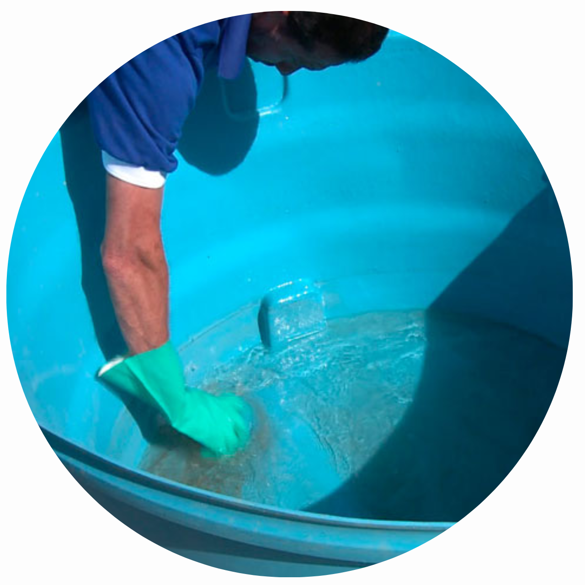
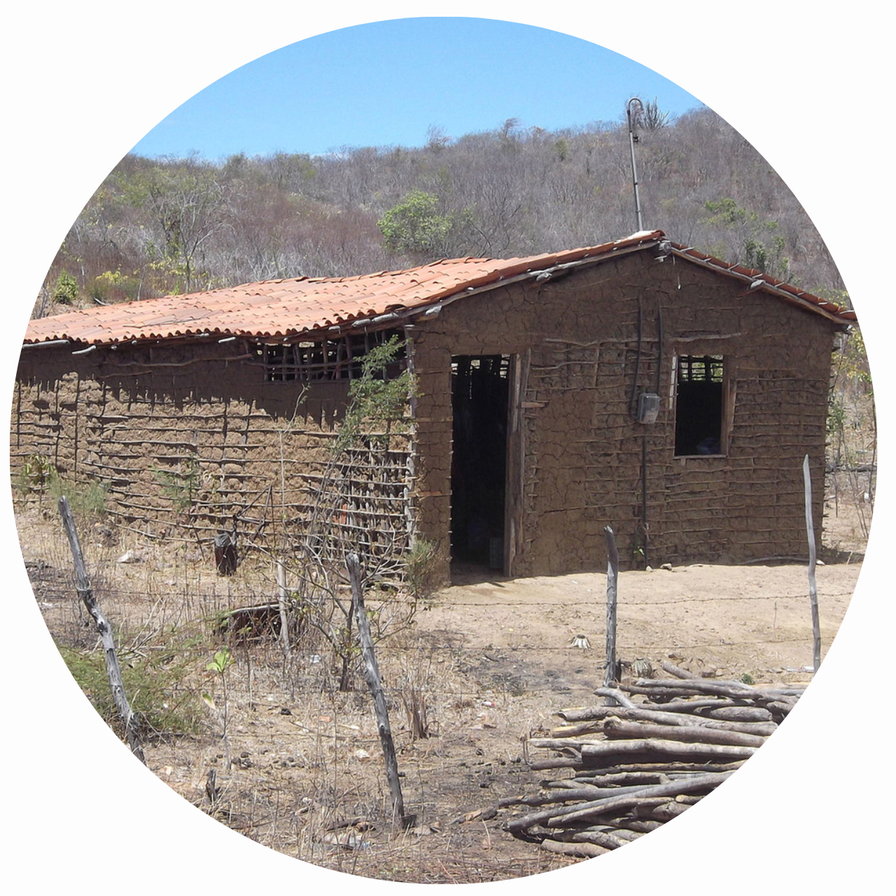

A malária é uma protozoose (doença causada por protozoário) e atinge
cerca de 88 países quando trata-se da sua transmissão
natural (pela picada do mosquito). Alguns deles são Caribe,
China, Paraguai, e os países amazônicos da América (como Bolívia, Equador,
Colômbia, Venezuela, Guiana, Suriname, Guiana Francesa e Brasil).
No Brasil, a região da Amazônia é a mais afetada, com 98% dos casos
(atingindo o Acre, Amapá, Amazonas, Pará, Rondônia e Roraima).
Além disso, o dia 06/11 é considerado o Dia da Malária nas Américas.
Agentes etiológicos
Os agentes que causam a malária são protozoários do gênero Plasmodium.
Entre as espécies que serão abordadas aqui, apenas o Plasmodium knowlesi
é mais comum em animais do que em humanos. Conheça um pouco mais sobre as espécies:
Reino: Animalia Filo: Arthropoda Classe: Insecta Ordem: Diptera Família: Culicidae Gênero: Anopheles Subgênero: Nyssorhynchus e Kerteszia Espécie: Anopheles (Nyssorhynchus) darlingi

As fêmeas que transmitem a malária para os humanos no momento em que vão se alimentar
de sangue, e essa necessidade de sangue é para que possam produzir e desenvolver
seus ovos (para o ciclo de vida dos novos mosquitos seja mantido). Segundo a Organização
Pan-Americana da Saúde (OPAN), existem mais de 400 espécies desse mosquito, e
cerca de 30 deles são vetores importantes da malária.
Fonte: iStock (2022)
Transmissão
A transmissão da malária pode ocorrer de várias formas, conheça abaixo algumas delas:
Através do vetor
Ocorre por meio da picada da fêmea do mosquito Anopheles infectada por uma ou mais espécies do protozoário Plasmodium
Transfusão de sangue
Quando o doador apresenta sangue contaminado com o parasita da malária. São casos mais raros.
Seringas infectadas
Ocorre quando há uso de agulhas ou instrumentos contaminados com sangue de uma pessoa infectada.
Pela placenta (congênita) para o feto
Acontece quando a mãe infectada transmite o parasita para o feto durante a gravidez ou para o recém-nascido durante o parto.

Fonte: iStock (2021)
Ciclo da doença
Contaminação
Quando a fêmea do mosquito Anopheles, que está infectada, pica o ser humano, vai injetar o protozoário na forma de esporozíto.

Esses esporozítos vão seguir em direção ao fígado, que vao infectar os hepatócitos (as células que compõem o tecido hepático, do fígado).
Além disso, os esporozítos vão originar os merozoítos, que rompem os hepatócitos e infectam as hemácias.

Há mudanças nos merozoítos, em que eles se transformam em trofozoítos, que vão dar origem a novos merozoítos (que vão romper algumas hemácias
e infectar outras).

Quando as hemácias são rompidas, os esquizontes (estruturas encontradas no Plasmodium) vão ficar livres no sangue. É nesse momento em que os
sintomas da malária começam a se intensificar.
Sintomas da malária
Os sintomas da malária variam, pois dependem da espécie do protozoário que vai infectar o
ser humano. Em casos mais graves ou não tratados, a malária pode levar a complicações
mais severas. Conheça alguns dos sintomas da doença logo abaixo:

Dor abdominal intensa
Que podem ser acompanhadas por manifestações de náuseas, vômitos
astenia, fadiga e diarreia.
Febre alta
Dependendo da espécie do parasita, a febre alta pode ser acompanhada por
calafrios, suores e cefaleia.
Mucosas amarelas
O envolvimento da malária acaba manifestando icterícia no indivíduo
(não confundir com mucosas hipocoradas).
Convulsão ou desorientação
Não confundir com o ataque paroxístico febril (calafrios seguidos por uma
fase febril, com temperaturas de 41°C).
Hipoglicemia
Casos de malária grave (infecção por P. falciparum), causado pelo consumo de glicose pelo próprio parasita.
Cianose
Extremidades azuladas na pele, nos lábios ou nas unhas (causadas por escassez de oxigênio no sangue)

Fonte: Prefeitura de Manaus (2022)
Tratamento
O tratamento da doença envolve medicamentos antimaláricos para eliminar o parasita.
É importante ressaltar que tais tratamentos devem seguir a partir de instruções
de um médico. Alguns medicamentos antimaláricos são:
A cloroquina, por exemplo, é eficaz contra algumas espécies do parasita. Entretanto, não é eficaz contra o
Plasmodium falciparum, que adquiriu resistência ao medicamento.
Outros medicamentos prescritos são mefloquina, doxicilina, primaquina, entre outros.
Importante!!!
A escolha do medicamento dependerá do tipo de malária, da localização geográfica e da
resistência do parasita aos medicamentos.
Medidas profiláticas
Em áreas endêmicas, a prevenção da malária é de grande importância. Portanto, conheça as medidas preventivas da doença:
1
Uso de mosquiteiros
2
Roupas com proteção
3
Telas em portas e janelas
4
Uso de repelentes

5
Controle da vegetação aquática

6
Limpeza da margem de criadouros
7
Drenagem e aterro de criadouros

8
Melhoramento da moradia
BAHIA, Governo do Estado da. Malária. Apresentação. Disponível em: https://www.saude.ba.gov.br/suvisa/vigilancia-epidemiologica/doencas-de-transmissao-vetorial/malaria/. Acesso em: 18 maio 2023.
SAÚDE, Biblioteca Virtual em. Dia da malária nas Américas. Disponível em: https://bvsms.saude.gov.br/06-11-dia-da-malaria-nas-americas/. Acesso em: 16 maio 2023
SAÚDE, Ministério da. Boletim Epidemiológico Vol.53 N°50: malária na extra-amazônica do brasil. Malária na extra-amazônica do Brasil. 2022. Disponível em: https://www.gov.br/saude/pt-br/assuntos/saude-de-a-a-z/m/malaria/situacao-epidemiologica-da-malaria-1/boletins-epidemiologicos-de-malaria/boletim-epidemiologico-vol-53-no30-2022-malaria-na-regiao-extra-amazonica-do-brasil-serie-historica-de-2010-a-2021/view. Acesso em: 18 maio 2023.
SAÚDE, Ministério da. Malária. Sobre a malária. Disponível em: https://www.gov.br/saude/pt-br/assuntos/saude-de-a-a-z/m/malaria. Acesso em: 22 maio 2023.
Referências das medidas profiláticas:
Medida 1: Angela Peres/Secom/Governo do Estado do Acre (2017)
Medida 2: Freepik (2019)
Medida 3: Freepik (2022)
Medida 4: Getty Images/Reprodução (2022)
Medida 5: Carlos E. Ribeiro Jr./InfoSãoFrancisco (2021)